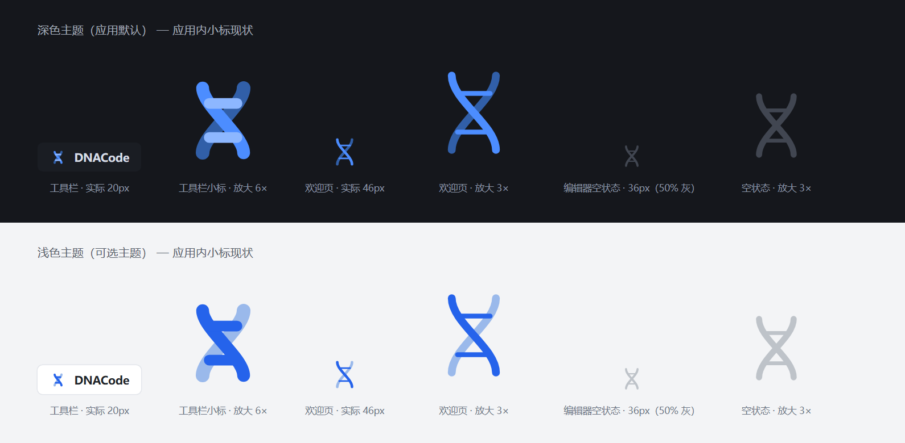
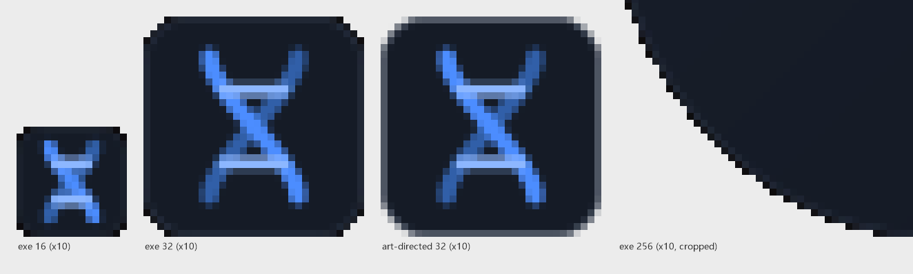
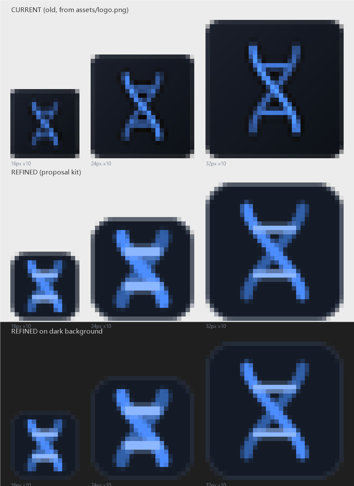

母版 DNACode-icon-1024.png（1024×1024）。已集成进应用：Windows exe
/ 安装包、macOS icns、Linux png。
下面是实际打包的小尺寸帧（16–256，均为对应尺寸的真实文件）：
DNACode-icon-light.png — 浅色背景变体DNACode-icon-monochrome.png — 单色变体（白标 + 深底）DNACode-icon-monochrome-transparent.svg — 透明底单色（新增，印刷 /
水印用）
DNACode-wordmark-outlined.svg — 深色背景用；文字已转曲（Inter
SemiBold），任何设备字形一致
DNACode-wordmark-light.svg — 浅色背景用（深色文字）；原版活字字标
DNACode-wordmark.svg 未改动，便于将来编辑


dnacode.exe / 安装包中提取的小尺寸（左）vs 设计源（右）

dnacode\src-tauri\target\release\dnacode.exednacode\src-tauri\target\release\bundle\nsis\DNACode_0.1.0_x64-setup.exeassets\brand\review\refined-icon-design-review.md